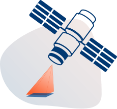
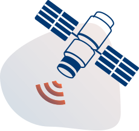

АО «Терра Тех» поставляет все виды космической съёмки с необходимыми характеристиками. Российские и зарубежные космические аппараты дистанционного зондирования Земли сегодня обеспечивают регулярное покрытие всей земной поверхности, что позволяет «Терра Тех» поставлять своим клиентам как архивные снимки, начиная с 2000 г., так и при необходимости разместить заказ на новую съемку.
Метод космической съёмки
-

Оптическая съёмка
Наиболее распространенный вид космической съемки с высокой степенью обзорности и информативности. Подходит для решения широкого спектра задач наблюдения видимых характеристик и изменений объектов на поверхности Земли.
Оптическая съёмка СПЕКТРАЛЬНЫЙ ДИАПАЗОН Панхроматический (0,450 - 0,900) Мультиспектральный (RGB, ближний ИК) ПРОСТРАНСТВЕННОЕ РАЗРЕШЕНИЕ, м 0,3 – 0,5 СТЕРЕОСЪЁМКА Да ПЕРИОДИЧНОСТЬ, сутки 1-16 -

Радиолокационная съёмка
Используется в случаях, когда непосредственное наблюдение видимой поверхности Земли затруднено (облачность, снег, ночь). Актуальна для мониторинга смещений земной поверхности и наблюдения за обстановкой в полярных широтах.
Радиолокационная съёмка РЕЖИМ СЪЁМКИ Высокодетальный Маршрутная съёмка Среднего разрешения Низкого разрешения ДИАПАЗОН И ДЛИНА ВОЛНЫ, см С (5,6 см) / S (10 см) / Х (3,1 см) ПРОСТРАНСТВЕННОЕ РАЗРЕШЕНИЕ, м От 1 до 100 ШИРИНА ПОЛОСЫ СЪЁМКИ, км от 5 до 500 ПЕРИОДИЧНОСТЬ, сутки 2-11
Спутники
| WorldView, QuickBird, Geoeye, Ikonos | Линейка космических аппаратов американской компании-оператора MAXAR, разрешающая способность вплоть до 30 см. на пиксел, обладают большим архивом и лучшим на сегодняшний день качеством съемки | |
|---|---|---|
| Kompsat | Линейка космических аппаратов корейской компании-оператора SIIS, разрешающая способность вплоть до 50 см. на пиксел, способны осуществлять стереосъемку. | |
| Triplesat | Линейка космических аппаратов китайской компании-оператора 21AT, разрешающая способность вплоть до 80 см. на пиксел и обладают высокой производительностью. | |
| WorldView, QuickBird, Geoeye, Ikonos | Линейка космических аппаратов американской компании-оператора MAXAR, разрешающая способность вплоть до 30 см. на пиксел, обладают большим архивом и лучшим на сегодняшний день качеством съемки | |
| Kompsat | Линейка космических аппаратов корейской компании-оператора SIIS, разрешающая способность вплоть до 50 см. на пиксел, способны осуществлять стереосъемку. | |
| Triplesat | Линейка космических аппаратов китайской компании-оператора 21AT, разрешающая способность вплоть до 80 см. на пиксел и обладают высокой производительностью. |